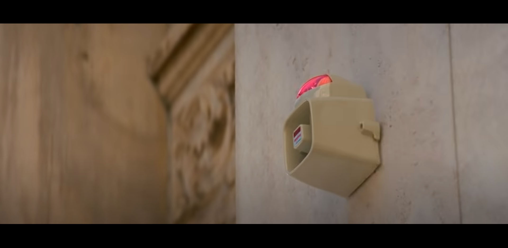

shot 1: close-up of the red car that is parked on the other side of the bank
shot 2: Baby, the driver, starts his music
shot 3: Baby turns his head to the right
shot 4: Griff is staring at Baby
shot 5: Buddy is looking towards his right
shot 6: Darling is looking towards her left at Buddy with a smirk
shot 7: The three members in all black and sunglasses get out of the car and open the trunk
shot 8: They crossed the road all with black bags in their right hand
shot 9: As they cross, they pull up the bandana that was already on their necks to cover their faces
On the other side, Baby is now mouthing the song and fake singing into a water bottle while dancing to the beats
Simultaneously, the members are now threatening people with guns inside the bank trying to get the money

The alarm is triggered
Baby notices straightaway and prepares to leave
After the members got back onto the car, Baby immediately drives away from the scene
With police cars behind them, the car gradually reaches high speed
Driving with high precision and unbelievable skills, Baby loses multiple police cars and goes through a narrow driveway
However, the police does not give up and are now close behind them
Baby recons the situation and finds a way to outsmart the police as well as the chopper high above
He drives between two similar red cars and confuses the helicopter
As the three red cars enter the tunnel, Baby quickly speeds up to the front of one red car and forces it to switch position with him
The police takes the bait and chases the wrong cars after passing the tunnel
The members put a smile on their faces as they lose the sight of the police cars
Baby drives into a parking lot
While taking off their black jackets, the crew switches to a black car that was already prepared for them
Darling takes over and drives them off
The car slowing fades out of sight, concluding the successful heist